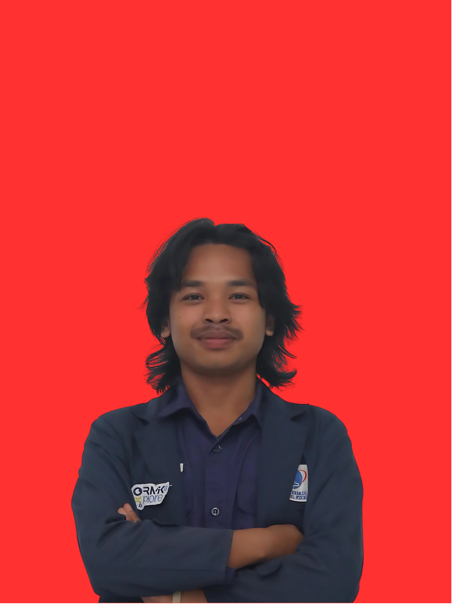

Artikel Utama

Nur Fadilah
Informasi Pribadi
| Nama | : Nur Fadilah |
| TTL | : Bogor, 08 Desember 2002 |
| Alamat | : Jl. H. Mawi Gang Serius RT03/03 Desa Waru, Kecamatan Parung, Kabupaten Bogor |
| No. HP | : 0857-7258-6141 |
| : nurfadilah.kebot@gmail.com | |
| Agama | : Islam |
| Jenis Kelamin | : Laki-laki |
| Status | : Mahasiswa |
Pendidikan
- SMK Yapia Parung (2018 - 2021)
- S1 Teknik Informatika - STT Nurul Fikri (2023 - sekarang)
Keahlian
- HTML dasar
- React (pengenalan)
- Microsoft Office
- Canva
Pengalaman Organisasi
- Panitia Ormik 2024 — Liaison Officer
- Panitia Ormik 2025 — Liaison Officer
- Teshpa — PJ Massa